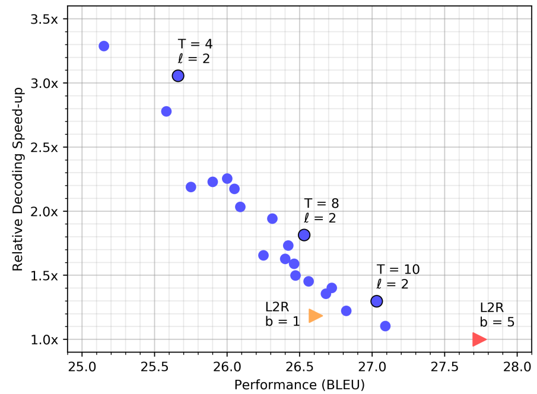

CMLM Transformer
CMLM stands for “Conditional Masked Language Modeling” Transformer which is an encoder-decoder Transformer architecture trained with a masked language modeling (MLM) training objective and uses “masked-predict” algorithm for decoding. This model was proposed by FAIR in 2019 and published in their paper: Mask-Predict: Parallel Decoding of Conditional Masked Language Models. The official code for this paper can be found on Facebook Research’s official GitHub repository: facebookresearch/Mask-Predict.
Unlike most machine translation systems which generate translations autoregressively from left to right, the CMLM Transformer uses a non-autoregressive decoding algorithm called “masked-predict” that iteratively decodes in linear time. CMLM Transformer is the same as the standard Transformer with one change in the decoder; the masking of the self-attention in the decoder was removed to make the decoder attend to both left and right contexts when generating the output translation.
Note: The difference between MLM and CMLM is that MLM predicts masked tokens given the remaining sentence while CMLM predicts masked tokens given the source sentence + the remaining of target sentence.
CMLM Training
A conditional masked language modeling (CMLM) predicts a set of target tokens $Y_{\text{mask}}$ given a source text $X$ and part of the target text $Y_{\text{obs}}$. It makes the strong assumption that the tokens $Y_{\text{mask}}$ are conditionally independent of each other (given $X$ and $Y_{\text{obs}}$). During training, CMLM is done as follows:
-
A number of tokens that should be masked is chosen randomly from a uniform distribution between one and the sequence’s length.
-
Then, that number of tokens get masked $Y_{\text{mask}}$. Following BERT, masking is done by replacing the token with a special $\left\lbrack \text{MASK} \right\rbrack$ token.
-
CMLM is optimized using cross-entropy loss over every token in $Y_{\text{mask}}$. This can be done in parallel, since the model assumes that the tokens in $Y_{\text{mask}}$ are conditionally independent of each other.
In traditional left-to-right machine translation, where the target length is determined by the generation of the special end of sentence token $\left\lbrack \text{EOS} \right\rbrack$. However, for CMLMs to predict the entire sequence in parallel, they must know its length in advance. Here, they added a special $\left\lbrack \text{LENGTH} \right\rbrack$ token to the encoder and then train the model to predict the length of the target sequence. Its loss is added to the cross-entropy loss.
Mask-Predict Decoding
Mask-predict is a new highly-parallel decoding algorithm that predicts any subset of the target words conditioned on the input text $X$ and a partially masked target translation $Y_{\text{mask}}$. Decoding starts with a completely masked target text, then the model predicts all of the words in parallel, then repeatedly masks out and regenerates the subset of words that the model is least confident about depending on the other high-confidence predictions. After a few cycles, the model starts to produce high-quality translations.
More formally; given the target sequence’s length N, we define two variables: the target sequence $\left( y_{1},\ …y_{N} \right)$ and the probability of each token $\left( p_{1},\ …p_{N} \right)$. The algorithm runs for a predetermined number of iterations $T$, which is either a constant or a simple function of $N$. At each iteration, we perform a mask operation, followed by predict.
- Mask:
For the first iteration ($t = 0$), we mask all the tokens. For later iterations, we mask the $n$ tokens with the lowest probability scores. The number of masked tokens $n$ is a function of the iteration $t$; usually a linear decay $n = N.\frac{T - t}{T}$. For example, if $T = 10$, $90\%$ of the tokens will be masked at $t = 1$. $80\%$ at $t = 2$, and so forth.
- Predict:
After masking, the CMLM predicts the masked tokens $Y_{\text{mask}}^{\left( t \right)}$ mask, conditioned on the source text $X$ and the unmasked target tokens $Y_{\text{obs}}^{\left( t \right)}$. We select the prediction with the highest probability for each masked token $y_i ∈ Y(t)$ mask and unmask them by update its probability score:
The following example is from the WMT’14 German→English validation set that illustrates how mask-predict generates text. At each iteration, the highlighted tokens are masked and re-predicted, conditioned on the other tokens in the sequence.
In the first iteration ($t = 0$), the entire target sequence is masked ($Y_{\text{mask}}^{\left( 0 \right)} = Y,\ Y_{\text{obs}}^{\left( 0 \right)} = \varnothing$), and is thus generated by the CMLM in a purely non-autoregressive process. This produces an ungrammatical translation with repetitions (“completed completed”).
In the second iteration ($t = 1$), 8 of the 12 tokens generated in the
previous step were predicted with the lowest probabilities. That’s why
they got masked with the $\left\lbrack \text{MASK} \right\rbrack$ token
and re-predicted while conditioning on the input sequence $X$ and the
four unmasked tokens
$Y_{\text{obs}}^{\left( 0 \right)} = {The",\20”,\ November",\.”}$
which results in a more grammatical and accurate translation.
In the third iteration ($t = 2$), 4 of the 8 tokens generated in the previous step were predicted with the lowest probabilities. Now that the model is conditioning on 8 tokens, it is able to produce an more fluent translation; “withdrawal” is a better fit for describing troop movement, and “November 20th” is a more common date format in English
Notes:
In the third iteration ($t = 2$), two of the four masked tokens were predicted at the first step ($t = 0$), and not re-predicted at the second step ($t = 1$). This is quite common for earlier predictions to be masked at later iterations because they were predicted with less information and thus tend to have lower probabilities.
When decoding, they unmask the highest $l$ tokens. This is a hyper-parameter that can be seen as the beam size for beam search of non-autoregressive decoders. The following table shows an experiment of base CMLM with $T = 10$. Surprisingly, more $l$ tokens can degrade performance.
The following figure shows the decoding speed of CLML Transformer, compared to the standard base transformer on the WMT’14 EN-DE test set, with beam sizes $b = 1$ (orange triangle) and $b = 5$ (red triangle). Each blue circle represents a mask-predict decoding run with a different number of iterations $T = \left\{ 4,\ …,\ 10 \right\}$ and length candidates $l = \left\{ 1,\ 2,\ 3 \right\}$:

Experiments
In this paper, they followed the standard hyper-parameters for transformers in both small and base configuration:
| Layers | Attention Heads | Model Dimension | Hidden Dimension | |
|---|---|---|---|---|
| Small | 6 | 8 | 512 | 512 |
| Base | 6 | 8 | 512 | 2048 |
They followed the weight initialization scheme from BERT, which samples weights from $\mathcal{N}\left( 0,\ 0.02 \right)$, initializes biases to zero, and sets layer normalization parameters to $\beta = 0,\ \gamma = 1$. For regularization, they used $0.3$ dropout, $0.01$ L2 weight decay, and smoothed cross validation loss with $\varepsilon = 0.1$.
They used batches of $128k$ tokens using Adam optimizer with $\beta = (0.9,\ 0.999)$ and $\varepsilon = 10^{- 6}$. The learning rate warms up to a peak of $5*10^{- 4}$ within $10,000$ steps, and then decays with the inverse square-root schedule. All models were trained for 300k steps, measured the validation loss at the end of each epoch, and averaged the 5 best checkpoints. During decoding, they used a beam size of $beam\ size = 5$ for autoregressive decoding, and similarly use $l = 5$ length candidates for mask-predict decoding.
The following table shows that among the parallel decoding methods, CMLM Transformer yields the state-of-the-art BLEU scores on WMT’14 EN-DE, in both directions. Another striking result is that a CMLM with only 4 mask-predict iterations yields higher scores than 10 iterations of the iterative refinement model:
The translations produced by CMLM Transformer also score competitively when compared to standard transformers. In all 4 benchmarks, CMLM-base reaches within 0.5-1.2 BLEU points from a well-tuned base transformer, a relative decrease of less than 4% in translation quality. In many scenarios, this is an acceptable price to pay for a significant speedup from parallel decoding.
The following table shows that these trends also hold for English-Chinese translation, in both directions, despite major linguistic differences between the two languages:
Based on experiments run on EN-DE and EN-RO datasets, they found out that multiple iterations $T$ is a must to solve the “multi-modality problem” which means that the model often predict the same word $w$ with high confidence, but at different positions. As we can see from the following table, the proportion of repetitive tokens drops drastically during the first 2-3 iterations:
During experiments they noticed that longer sequences need more iterations; the following table shows that increasing the number of decoding iterations ($T$) appears to mainly improve the performance on longer sequences:
Having said that, the performance differences across length buckets are not very large, and it seems that even 4 mask-predict iterations are enough to produce decent translations for long sequences ($40 \leq N$).
Model Distillation
Following previous convention on non-autoregressive machine translation models, they trained CMLM Transformer on translations produced by a standard transformer model (large for EN-DE and EN-ZH, base for EN-RO). For a fair comparison, they also trained standard left-to-right base transformers on translations produced by large transformer models for EN-DE and EN-ZH, in addition to the standard baselines.
To determine CMLM’s dependence on knowledge distillation, they train models on both raw and distilled data, and compared their performance. The following table shows that in every case, training with model distillation substantially outperforms training on raw data:
It appears as though CMLMs are heavily dependent on model distillation.